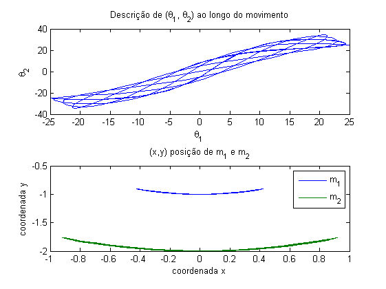

Ex. 3.2 - Sistema caótico
NOTA: a simulação é corrida a partir das equações diferenciais das variáveis de estado
clear all close all m = 50; m1 = m; m2 = m; l = 1; l1 = l; l2 = l; g = 10; p10 = 0; p20 = 0; teta10 = 25*pi/180; teta20 = 25*pi/180; load_system('sis_caotico.mdl'); % a simulação deve ser posta a correr com t_disc(3) para abranger % todos os tempos set_param(gcs, 'StopTime', '10'); sim('sis_caotico'); subplot(2,1,1) plot(teta1*180/pi, teta2*180/pi) xlabel('\theta_{1}') ylabel('\theta_{2}') title('Descrição de (\theta_{1}, \theta_{2}) ao longo do movimento') subplot(2,1,2) plot(x1,y1,x2,y2) xlabel('coordenada x') ylabel('coordenada y') title('(x,y) posição de m_{1} e m_{2}') legend('m_{1}','m_{2}')